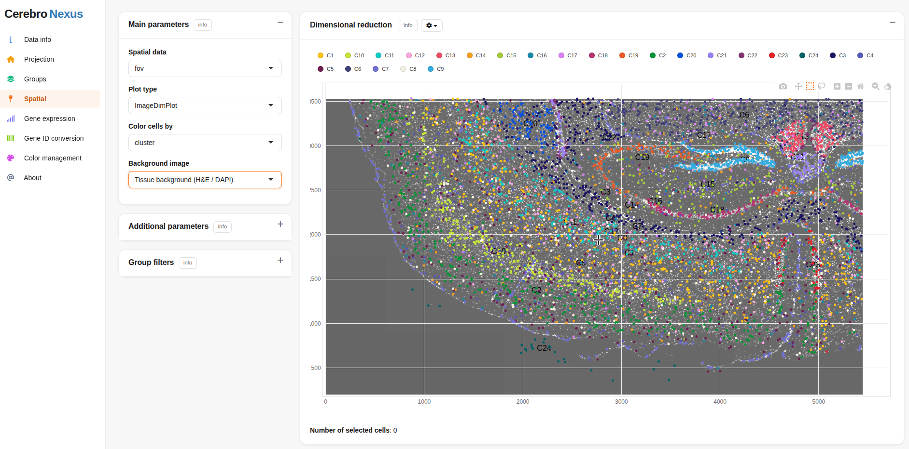

CerebroNexus is a Shiny platform for exploring and sharing single-cell and spatial transcriptomics data, with gene-expression, immune-repertoire, trajectory, and HLA-TCR analyses. See the full documentation.
CerebroNexus began as a fork of cerebroApp by Roman Hillje and has since evolved with substantial new features and active development by mihem and Xuesong Wang.
Automated tests run in a reproducible Nix environment.

CerebroNexus spatial data view
2. Quick Start
library(CerebroNexus)
convertSeuratToCerebro(
seurat_file = "my_seurat.rds",
result_dir = "output",
groups = c("sample", "cluster")
)
createShinyApp(
cerebro_data = c("My dataset" = "output/cerebro_my_seurat.crb"),
result_dir = "my_app"
)License
MIT, see LICENSE.md.